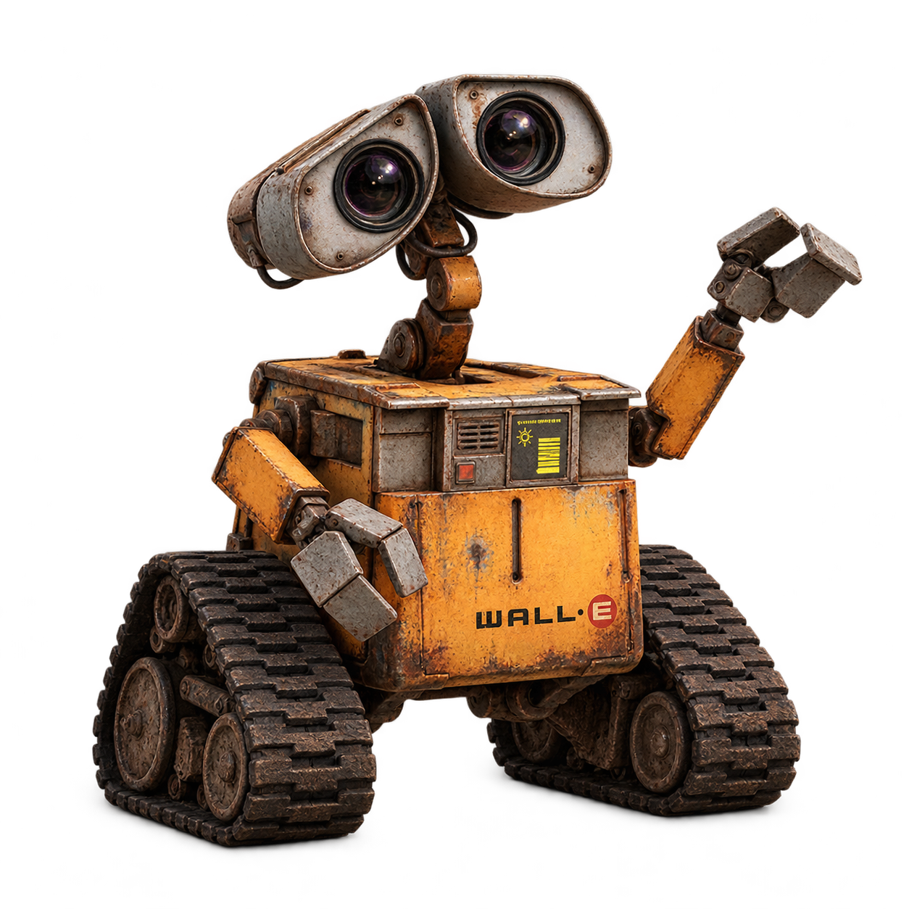

具身智能 · 研究与实践
从仿真开始，
理解智能如何行动。
以机器人操作为起点，探索感知、世界模型与规划。
把原理讲清楚，把实验一步步记录下来。
面向有 Python 与深度学习基础的学习者。

没有实机，如何开始学习具身智能？
从桌面上的一个方块出发，理解观测、动作与闭环，找到第一项可验证的练习。
学习路线
从理解任务，到第一次实验。
01
理解任务
开始阅读 02没有实机，如何开始学习具身智能？
从桌面推物理解观测、动作与闭环。
看见场景
开始阅读 03第一次机器人仿真实验：保存一张相机图像
获取并检查一帧真实 RGB，记录环境与相机配置。
理解数据
开始阅读 04机器人数据长什么样：读懂一条观测与动作记录
读取一条真实 transition，分清动作、目标与实际运动。
记录轨迹
开始阅读 05从一条记录到一段轨迹：保存机器人动作序列
保存20个动作与21份观测，检查时间轴并回放真实轨迹。
批量读取
开始阅读 06把轨迹变成数据集：用 PyTorch 批量读取机器人样本
离线读取20条样本，构建Dataset并验证5个真实数据批次。
构建序列
开始阅读 从单步到序列：构建机器人轨迹时间窗口
从真实轨迹构造17个四步窗口，分清时间轴、批次轴与回合边界。